Audiveris-Bandscore ＋ MuseScore-Bandscore
Audiveris 读古典谱效果很好；换成日式乐队谱、键盘谱，就会反复遇到同一批问题。
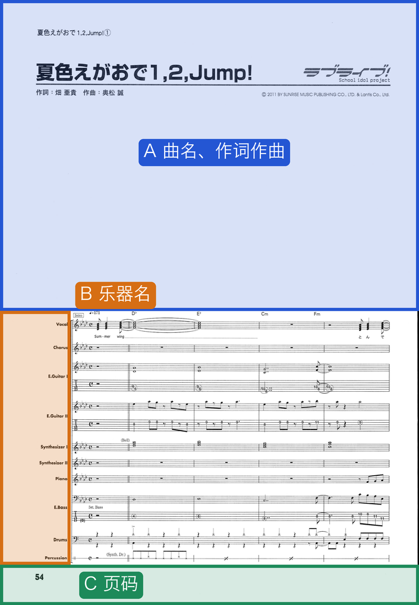
读出的是文字，所以没有看图能力的模型也能写出声部提示（partsHint）；几秒钟就好，有疑点时才去看图。
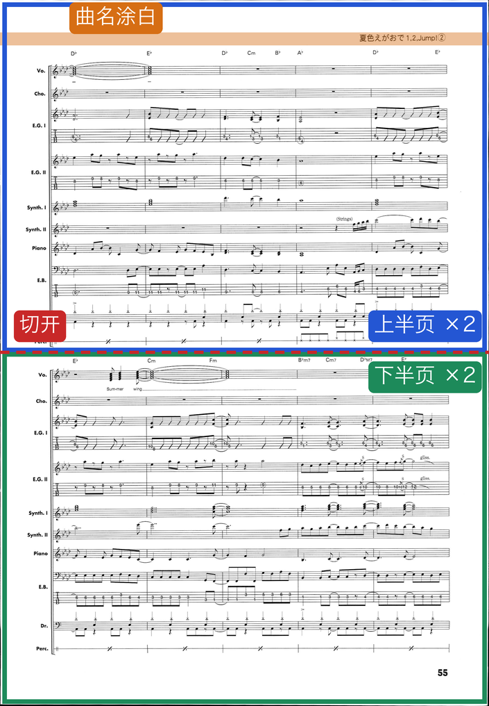
Audiveris 同一张图跑几次结果都一样，所以差别全来自输入。用多页、用不靠人判断的指标来比：小节里各声部的时值和拍号对不上，就算读错。
代价：整首处理时间 14.8 分钟 → 19.8 分钟
放大不是越大越好：2 倍更准，每个半页约 25 秒，2.5 倍要 41 秒
输入提示类的功能要自己打开，不设就和原版一样；识别、导出、稳定性的修正默认生效。
21 页、5 个声部的键盘乐团谱（钢琴大谱表＋弦乐、合成器各两部），两边都不做后处理。
6 页乐团谱、键盘谱人工标注答案，送给两种 OCR 的是同一批图像。
代价是速度：每页约 1 秒 → 约 12 秒（CPU）。用 GPU 跑 OCR 时每页约 3 秒。
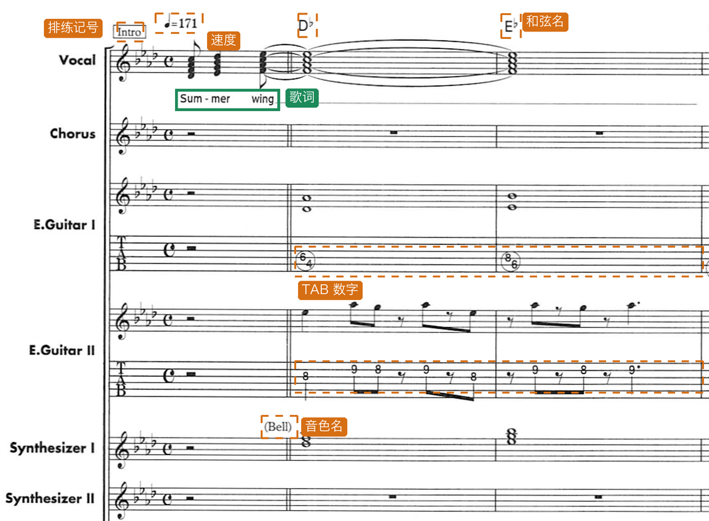
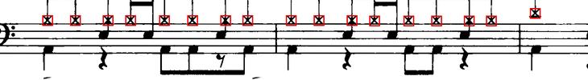
红框：模板找到的叉头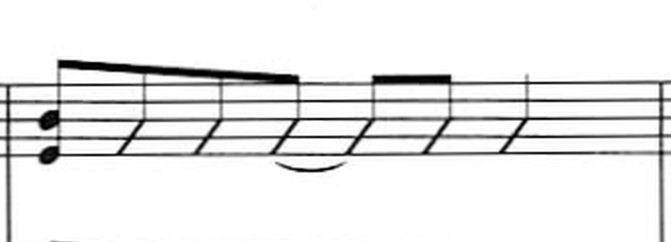
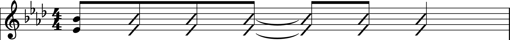
TAB 的品格数字目前不读：吉他、贝斯的音高从上方五线谱读。谱例：《夏色》E.Guitar I 第 7 小节。
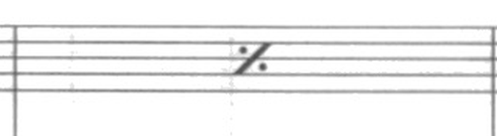
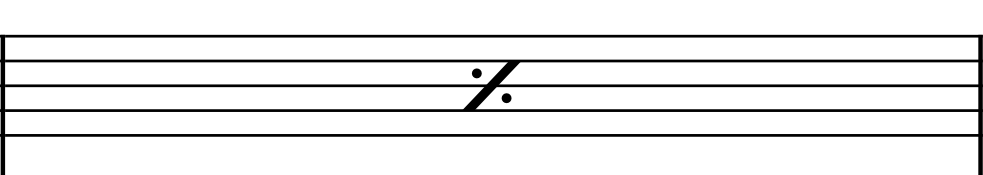
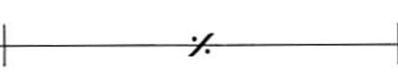
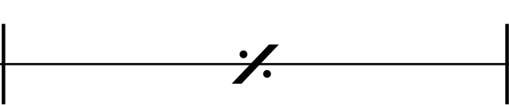
谱例：《想いよひとつになれ》A.Guitar 第 21 小节；《夏色》Percussion 第 7 小节。
乐队谱的 Perc. 声部常常只画一条线，夹在一整页五线谱中间。原版的一线谱开关是整本生效的，不是为这种混排设计的。
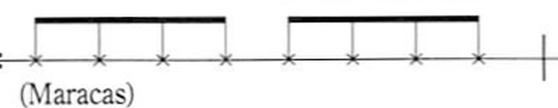
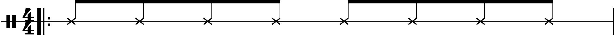
谱例：《夏色》Percussion 第 26 小节（Maracas）。
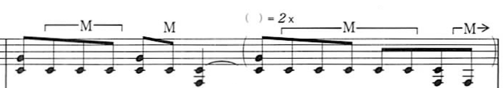
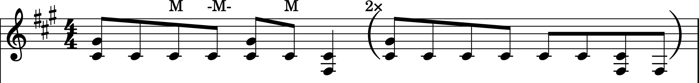
谱例：《Snow halation》E.Guitar 第 20 小节。同一小节里并排放两遍，小节数不变。
日式乐队谱常在反复段的同一小节里，用括号写第二遍才弹的音。官方 MuseScore 没有“同一小节、两遍不同内容”的写法。
基于 Jojo-Schmitz 维护的 MuseScore 3.7 Evolution，版本名改为 3.8 Bandscore。
项目以 AGPL-3.0 开源。欢迎修正和改进建议，包括 TAB 品格数字识别这类还没做的功能。
感谢上游 Audiveris、MuseScore，以及 Jojo-Schmitz 维护的 MuseScore 3.x。授权沿用上游：AGPL-3.0 / GPL-2.0。